壹
人物形象 · 灵植弟子
外门灵植弟子
开局形象：练气一层 · 青云宗 · 初得三块灵田
- 丸子发髻 + 木簪金簪头 —— 辨识度记忆点，境界提升后可换发饰（二期）
- 青绿道袍 + 米白交领中衣 —— 主色即游戏 UI 主色，统一视觉
- 竹背篓装灵草（微光） —— 点题"灵植"，展示收获成果
- 右手灵锄 —— 种田主行动的具象化
- 腰间玉佩与葫芦 —— 修仙味道的软装饰，金色点缀呼应 UI
- 周身灵气光点 —— 背词合格后灌注灵气的视觉语言
贰
环境图 · 灵田场景

场景合成预览 · 弟子站在成熟灵草旁
肆
风格说明与用途
- 开始画面 —— 环境图作背景，人物立绘居中，故事引子覆盖其上
- 游戏主界面 —— 环境图裁切作顶部横幅 / 田地区域背景
- 头像 —— 圆形裁切，用于状态栏与结算成绩单
- 灵气光点动画 —— 测验合格、灌注时的即时反馈特效语言
- 全部为手绘 SVG —— 无版权风险、体积极小、可无损缩放、可加动画
- 初版定调 —— 本页确定人物/场景/配色的方向，细节可逐版迭代
- 后续可升级 —— 若想换 AI 生图或像素风，配色体系（第叁节）仍然复用
- 审核方式 —— 对造型、配色、气质提意见，我按意见修订